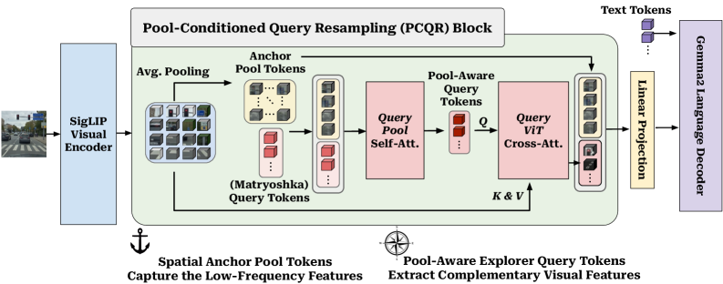

Observation
Existing elastic LVLM compression methods fail in opposite ways under aggressive budgets. Spatial-only pooling blurs detail through aliasing, while query-only resampling weakens dense spatial grounding.
arXiv 2026
Max Planck Institute for Informatics · Google · Technical University of Munich
Abstract
Large Vision-Language Models (LVLMs) map visual inputs into dense token sequences, imposing a quadratic computational bottleneck for inference. Elastic visual-token compression addresses this by training a single model that can run at multiple visual-token budgets. However, existing approaches struggle under aggressive compression. Spatial-only compression induces spectral aliasing that obscures fine-grained detail, while query-only compression sacrifices explicit grid-aligned spatial structure. PARCEL resolves this conflict by establishing pooled spatial tokens as low-frequency layout anchors and conditioning elastic query tokens on these anchors through Pool-Conditioned Query Resampling. Across 27 benchmarks, PARCEL improves the performance-efficiency Pareto frontier over prior elastic baselines while preserving the “train once, deploy anywhere” paradigm.
Overview
Existing elastic LVLM compression methods typically fail by overcommitting to one of these roles. PARCEL explicitly splits them across pooled anchors and conditioned query tokens.
Existing elastic LVLM compression methods fail in opposite ways under aggressive budgets. Spatial-only pooling blurs detail through aliasing, while query-only resampling weakens dense spatial grounding.
PARCEL divides the work explicitly: pooled 2D anchors preserve low-frequency layout, and pool-aware query tokens recover complementary visual detail from the full feature grid.
Across 27 benchmarks, PARCEL shifts the Pareto frontier, outperforming M3 and MQT at matched budgets while retaining the practical “train once, deploy anywhere” story.
Method
The pooled anchor branch preserves low-frequency layout first, so the query pathway can spend its capacity on complementary visual detail rather than reconstructing coarse structure from scratch.

Budget-aware pooling creates deterministic spatial anchors that preserve low-frequency geometry and explicit layout.
Query tokens first attend to the anchors, so they no longer need to infer coarse layout from scratch.
The conditioned queries cross-attend to the full ViT features to recover complementary details that the pooled grid drops.
PARCEL dynamically scales anchor size and query count so the model stays effective across both severe and generous budgets.

Budget-Aware Routing
PARCEL does not keep a fixed compression recipe across all budgets. Instead, it redistributes capacity between spatial anchors and elastic queries as the available token count changes.

The model falls back to a severe anchor budget and preserves a usable compressed visual base even in the tightest setting.
PARCEL expands the anchor so query capacity is not wasted reconstructing structure that could have been preserved directly.
Once the anchor base is sufficiently rich, semantic explorer queries activate on top to recover complementary fine-grained information.
Spectral Analysis
The architecture is not only intuitive at the design level; its anchor-query decomposition is also reflected in measurable spectral behavior.


On ChartQA, this separation aligns with gains of +4.7 points at 64 tokens and +3.4 points at 256 tokens over M3.
Results
Across 27 benchmarks, PARCEL improves the aggregate retention-efficiency trade-off while remaining compatible with the train-once, deploy-anywhere elastic inference setup.

PARCEL leads the image aggregate at every reported budget: 95.1% at 256, 94.7% at 64, and 86.8% at 16 tokens.
The video aggregate remains especially strong, with 98.0% at 256, 97.9% at 64, and 95.0% at 16 tokens.
The explicit anchor pathway matters for dense spatial grounding under compression.
PARCEL also reaches 90.0% at 64 tokens and 90.8% at 256 tokens on the most resolution-sensitive evaluation block.
The full model wins across 256, 64, and 16 token budgets in the main ablation suite.
Pure pooling hits a hard ceiling when query exploration is removed.
Pool-aware query conditioning edges out ViT-only query designs at the highest budget.
BibTeX
If you use PARCEL in your research, please cite the paper below. Once the code repository is public, the placeholder button in the masthead can be swapped for the final link.
@article{kuzucu2026parcel,
title = {PARCEL: Pool-Anchored Resampling with Conditioned Elastic Queries for Efficient Vision-Language Understanding},
author = {Kuzucu, Selim and Tonioni, Alessio and Lup, Vasile and Schiele, Bernt and Tombari, Federico and Naeem, Muhammad Ferjad},
journal = {arXiv preprint arXiv:2605.30126},
year = {2026}
}